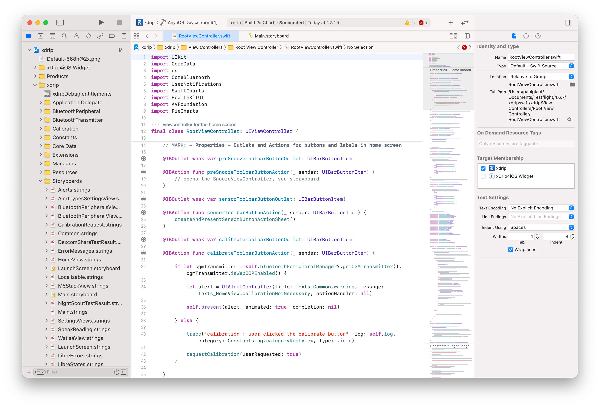
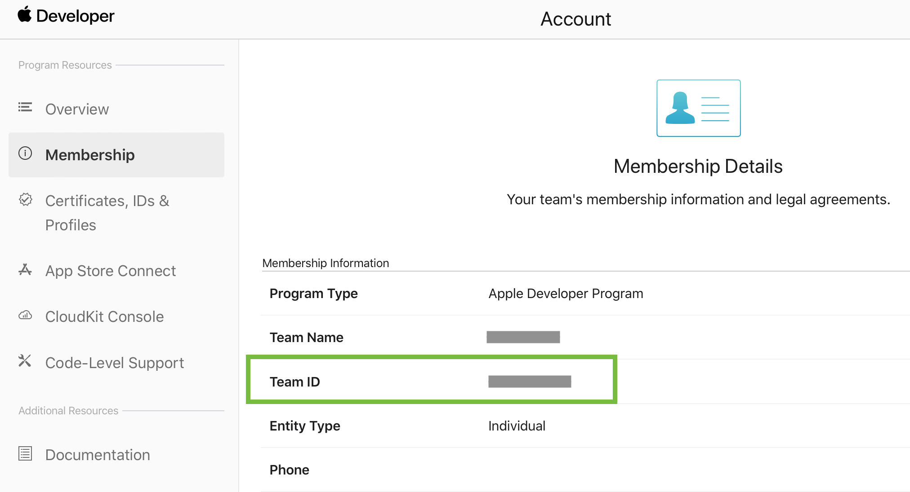

How to Build xDrip4iOS using Xcode⌁
Although for most users, the recommended method for installing xDrip4iOS is to just use Testflight, many users will want to build directly from source. If so, this page is for you!

xDrip4iOS is an open-source project and is released under the GNU General Public License v3.0.
Most users that decide to build from source will be people who are interested in collaborating in the development of the project or users who are used to DIY solutions (such as Loop or FreeAPS), have a valid Apple Developer license/account and are comfortable working with Xcode.
Although xDrip4iOS is the common public name for the application, the actual Github project name is xdripswift and you will often so it referred to as this in the following documentation.
The main project repository is here
Ready? So then let's begin. Here are some of the things that you'll need before you're able to build and install the app:
- A Mac computer (iMac, MacBook etc).
- A valid Apple Developer account/license. If not, you could theoretically use a free Apple ID to sign the app with but you will have to remove Healthkit and NFC integration capabilities as well as needing to re-sign the app every 7 days. It's really not worth considering this path if you do not have a current Apple Developer account
- Xcode installed. This can be done from the App Store on your Mac.
- Git installed. If you're unsure how to do this, please follow the guide here.
- A compatible cable to connect your iPhone (Lightning port) to your Mac (USB-C or USB-A as needed)
It is recommeneded to always use the latest versions of MacOS and Xcode. Your iPhone should ideally also be using the latest version of iOS.
Apple Developer Account⌁
To be able to build and run xDrip4iOS without restrictions on your personal devices, you will ideally need an Apple Developer Account. This is a paid account (around 100 EUR/USD per year) which gives you full access to Apple development tools and documentation, together with the ability to self-sign your own apps (or submit them to Testflight or App Store if you wanted).
More information at the Apple Developer website.
Install the Cocoa Pods Framework to your Mac⌁
If this is the first time that you have built xDrip4iOS on your Mac, then you will need to install a set of frameworks called CocoaPods. If you have previously installed CocoaPods, you can skip this step.
APPLE "M1" PROCESSOR?
In this step, the process will change slightly depending on the type of Mac you are using. You will be using either an Intel-based or M1-based Mac.
- The newer Mac Mini, MacBook Air or MacBook Pro (2020-2021) will generally have the new M1 processor (aka Apple Silicon)
- Most older Macs (<2020) will be running Intel processesors and will not need the following step to be carried out
If you are one of these newer M1 Macs, then you must perform the following steps before trying to install the Cocoapods framework.
Firslty, make sure you run Terminal using Rosetta (this is an Apple tool that allows you to translate older applications to run on the newer M1 architecture):
- Right-click on Terminal in Finder
- Click "Get Info"
- Select "Open with Rosetta"
- Clikc "OK"
Then, open Terminal and run the following command to install ffi:
sudo gem install ffi
Once successfully installed, you should now be able to continue as per the Intel instructions below
To install the Cocoapods framework to your Mac, please enter the following command:
sudo gem install cocoapods
Note the use of "sudo" here to elevate the permissions to allow installation at a system level. If asked for your password, use the admin password that you use to log into your Mac (this is generally just your user password).
You should get an "OK" message confirming successfull installation.
Clone the xdripswift project⌁
Good job for getting to here. Now it's time to grab a copy of the source code from Github and build the project.
You should open Terminal, navigate into your Documents folder (or wherever you prefer) and run the following command to clone the xDrip4iOS project:
git clone --branch=master --recurse-submodules https://github.com/JohanDegraeve/xdripswift
This will create a new folder called xdripswift and it will copy all needed code into it. Once completed we should navigate into this folder:
cd xdripswift
Install Cocoa Pods Dependencies⌁
Earlier we installed the full Cocoa Pods framework onto your system. Now we will go into the cloned project folder and install the individual project dependencies there:
pod install
Again, you will see some activity and you should get an OK message.
Configure the Override File⌁
In order to make building as easy as possible, we have adopted the use of XCconfig files. Whilst this may seem unnecessary at first glance, it will make things much easier for future installs.
Right click the following link, chose the "Save Link As..." or "Download Linked File As..." option and save the file to your xdripswift folder:
Open this file in TextEdit or Xcode and you will see the following structure. You will need to edit the lines highlighted in blue.
MAIN_APP_DISPLAY_NAME = xDrip4iO5
// Put your team id here for signing
// XDRIP_DEVELOPMENT_TEAM =
// Change to support running multiple apps simultaneously.
// MAIN_APP_BUNDLE_IDENTIFIER = com.$(DEVELOPMENT_TEAM).xdripswift
You should remove the "//" characters to uncomment these lines and in XDRIP_DEVELOPMENT_TEAM add your Development Team Identifier to this line.
If you have a paid Developer account, then you will probably already know this identifier. If not, then you can log into the Apple Developer Portal and look at the Membership section](https://developer.apple.com/account/#!/membership). You can find your ID here:

Put this ID (your ID, not the example shown below) here:
//XDRIP_DEVELOPMENT_TEAM = 95C72J2362
No Apple Development Account?
If you don't have a paid Developer account then you can always use something else. Examples:
//XDRIP_DEVELOPMENT_TEAM = johnsmith
//XDRIP_DEVELOPMENT_TEAM = iloveinsulin
If you get an error message that the Bundle Identifier is not available it's because somebody else has already used/registered it. Just choose a different one. It can even be completely random such as "DI20F77G9S0WLKWOCYVH". Just make sure you keep a note of it.
Finally, just uncomment the MAIN_APP_BUNDLE_IDENTIFIER line. No need to edit anything else. Your file should now look like this:
MAIN_APP_DISPLAY_NAME = xDrip4iO5
// Put your team id here for signing
XDRIP_DEVELOPMENT_TEAM = 95C77J2362 <--- here you put your unique ID
// Change to support running multiple apps simultaneously.
MAIN_APP_BUNDLE_IDENTIFIER = com.$(DEVELOPMENT_TEAM).xdripswift
Make sure you save/close the file and exit out of the editor/Xcode before continuing.
Build the Project⌁
Now we're going to open the Workspace file. Go back to terminal and run the following command (again, inside your xdripswift folder).
xed .
Open the xdrip file on the left of the screen and you should see that your Bundle Identifier has been correctly configured with the values you used in the previous step.
Now you'll need to "sign" the targets in order to allow Xcode to create a provisioning profile to be able to install the app to your iPhone. Go to the Signing & Capabilities tab one and select your Team in the drop down Signing option for each target.
Please note that there are four targets to sign:
- xdrip
- xDrip4iOS Widget
- Watch App
- Watch App Watchkit Extension
Repeat this for each target, connect your iPhone to your Mac, select your device at the top of the screen (don't select a simulator!) and hit Build ("Play")
How do I Update?⌁
From time to time, we will release updates to the xDrip4iOS application. When this happens, we will always merge the updated code into the master branch in Github and with this code, we will update the original Testflight release.
We would always recommend keeping your build up-to-date with the latest release. Apart from new features, we will often include fixes and improvements in every release.
You have two options for updating your build:
- Delete everything and start again. We don't recommend this, but it would work. Just delete the xdripswift folder and follow all instructions again from the top of this page.
- Use git to pull in the latest code changes (commits) and hit re-build. This is the preffered method and is what we will discuss below
Why do we recommend option (2)? It is simple. If you make a mistake in downloading and configuring the freshly cloned code in (1), then your app will install as a completely new app. What you want to do is to overwrite the original app and keep all settings/data. This is why we prefer option (2).
So we are starting with your existing xdripswift folder. This has the code you previously cloned and where you had edited xDripConfigOverride and also you had installed the cocoapods dependencies and signed the targets.
First we are going to save a copy of these local changes that you have made.
Make sure that you have closed Xcode completely, open Terminal and go to the xdripswift folder and run:
git stash
This will remove your changes and store them to one side whilst we do other things. We need to do this to remove your modifications before merging in the latest changes from the master branch in the main repository.
Now we have returned your local copy to be the same as when it was first cloned, we need to pull downstream the changes in master and merge them into your local copy:
git pull --force
This is a single command to perform a git "fetch" followed by a git "merge" to pull all latest changes and merge them into your local copy.
Now we need to re-apply the previously saved (stashed) changes. We do this by running:
git stash pop
We should now have the code fully updated and your local changes (signing etc) applied to the "new" code.
Now we're going to open the Workspace file as before. Go back to Terminal and run the following command (again, inside your xdripswift folder).
xed .
Now continue with the steps as before in order to build xDrip4iOS.
Update Problems?⌁
Xcode can sometimes make this tricky when it comes to simply describing a series of timestamped text edits to code files (which is the basic idea behind source-code control - in this case we use Github).
The main xdrip.xcodeproj and project.pbxproj files can easily get out of sync when big changes are made to the project structure and build settings and this makes it difficult to re-apply your previous changes. The update to 4.8.0 included very big changes with the addition of the Apple Watch app and new build variables/settings aimed to make things easier for newer builders.
When this happens, it is possible that you will get a merge error in Terminal. If this happens, you must fix it before trying to open the Workspace file and build.
CONFLICT (content): Merge conflict in xdrip.xcodeproj/project.pbxproj
If you see the above error, the easiest way is to simply start all over again. If you already built once, then it will take you just a few minutes.
Please follow these steps:
- Using Finder, browse to your xdripswift folder and copy your modified xDripConfigOverride file to the Desktop or wherever you want.
- Delete your xdripswift folder completely.
- Go back to the Build instructions and start the whole process again to clone a new/updated copy of the master branch.
- Run "install pod" again from Terminal inside your new xdripswift folder.
- This time, copy in your previously modified xDripConfigOverride file before simply opening the workspace with "xed ." as before.
Assuming that you really did follow the build instructions correctly the first time and didn't edit anything else, then you should be able to immediately just build the new version with no problems.